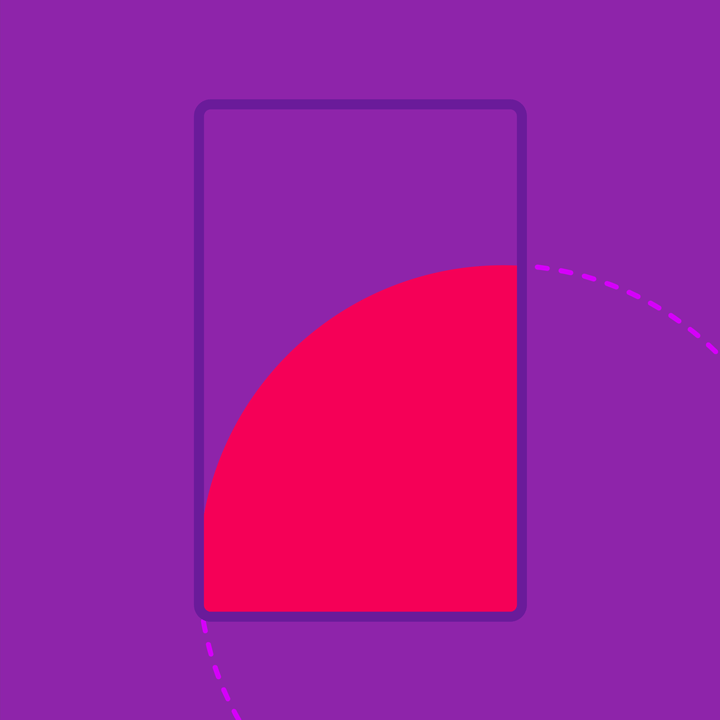

材料的表面可以合并和分裂，可以改变形状和尺寸，这些特性让材料更富生命力。
矩形转换
不对称转换
对称转换
散射转换
圆形转换

材料的表面可以合并和分裂，可以改变形状和尺寸，这些特性让材料更富生命力。
不对称转换
对称转换
圆形转换
当材料改变形状和尺寸时，它的宽高也会沿着运动曲线异步变化。这就会影响内部和周围的其他元素，因此这种转换需要精心编排。
所有表面的转换都会立即呈现在屏幕上，比如以下这些，因此也都使用标准曲线。
材料可以通过对称或不对称的宽高变化来扩展或收缩。
不对称转换会让宽高按照不同的比例发生变化。当多个元素参与改变，或者元素的位置也发生变化时，这种转换方式就非常合适。
不对称转换
元素在扩展时，宽度的转换会先于高度，收缩时则相反。
对称转换会让宽高按照相同的比例发生变化。当单个元素沿着单个轴发生变化时，这种转换方式就非常合适。
对称转换
宽高同时改变会让动画的细节更少，非常适合简单的改变形状。这种转换的时长比不对称转换稍短一些。
当元素异步展开时，它的内容（文字或图片）也会按照恒定的比例转换，以防止内容被拉伸。了解内容如何跟随表面转换可参考编排.
内容（比如全宽的图片）按照恒定的比例发生转换，与容器（比如超大的卡片）按照运动曲线异步转换。
容器内的出血内容（比如出血图片）也可以异步展开。
径向转换是对称的圆形的转换效果，从用户的触控点开始向四周扩散。通常应用在一个圆形的表面转换成其他形状。
对
在圆形的表面转换成其他形状，或者是从某个点新建了一个表面时，应当使用径向转换。
错
两个矩形相互转换时请不要使用径向转换。
错
不要对圆形的宽高使用异步转换。
错
不要转换复杂的形状。
转换的起点可以是对象当前所在的位置中心，也可以是表面最终出现的位置中心。
在转换期间，浮动操作按钮沿着一条弧线前进到目的地，然后扩展成一张卡片。
在转换期间，浮动操作按钮的中心保持原有的位置，创造了一种更微妙的扩展效果。
一个材料可以加入另一个材料，或者分裂成多个。两个材料也可以合并成一个，在移动结束前，它们的边缘相互靠近，然后重叠留白区域。
材料在转换刚开始的时候就分离了。
分离元素的阴影不会重叠在同级的其他元素上。
加入和分离的案例。